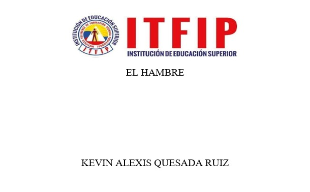
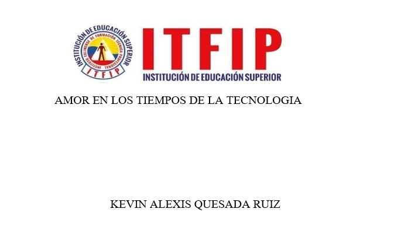
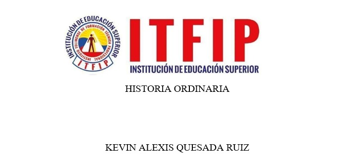
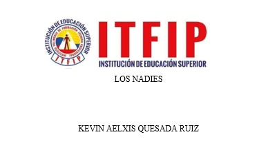
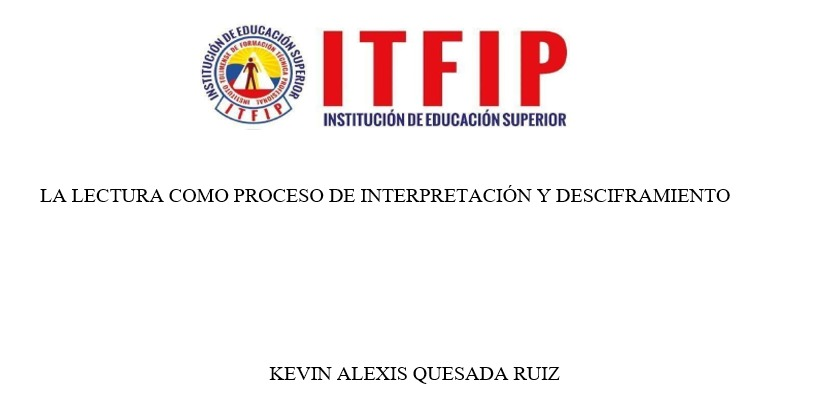
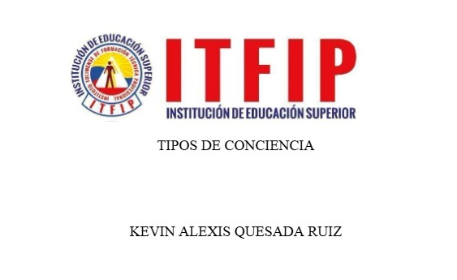

TECNICO PROFESIONAL EN PROGRAMACIÓN WEB
Soy Kevin Alexis Quesada Ruiz y este portafolio es un espacio donde iré compartiendo mis actividades, análisis y reflexiones sobre los diferentes temas trabajados en clase. Mi objetivo es que este sitio sea una herramienta de organización y aprendizaje, que refleje mi progreso en la materia.

Plataforma de comercio electrónico con carrito de compras y pasarela de pago.

El amor digital debe sumar, no reemplazar, el contacto humano real.

Un reflejo de las luchas y deudas que enfrenta el colombiano común en su búsqueda de un futuro mejor.

Un retrato de los invisibles, aquellos que viven, sueñan y mueren sin ser reconocidos."

Leer no es repetir signos, es descubrir sentidos ocultos y construir significados propio"

Paulo Freire propone tres conciencias: mágica, ingenua y crítica; la educación impulsa el paso hacia una conciencia crítica y transformadora.
La sociedad necesita tanto lo instituido como lo instituyente para crecer y transformarse.